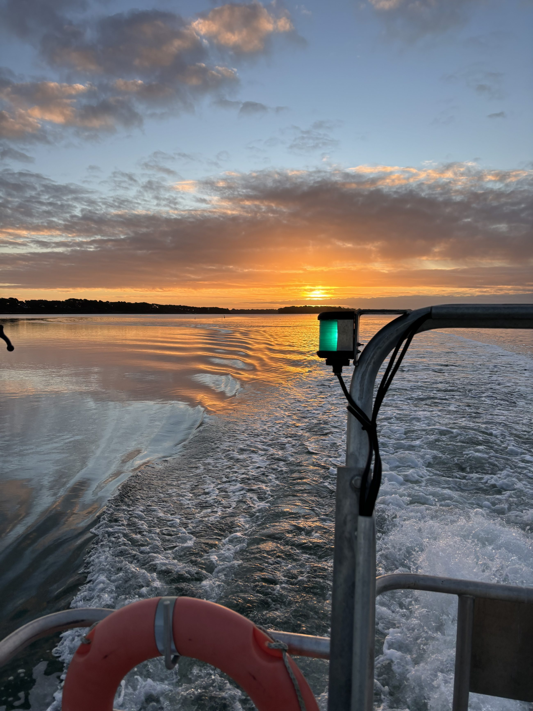
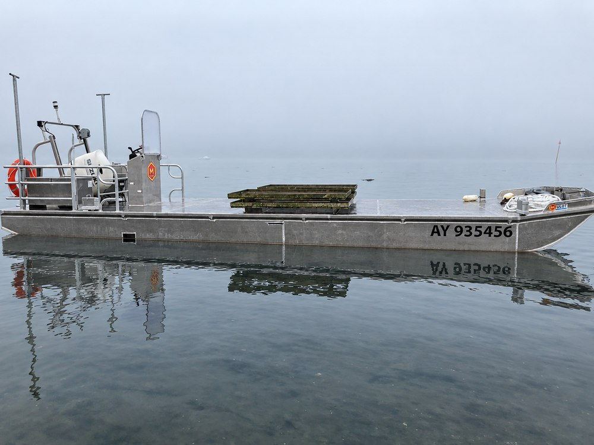
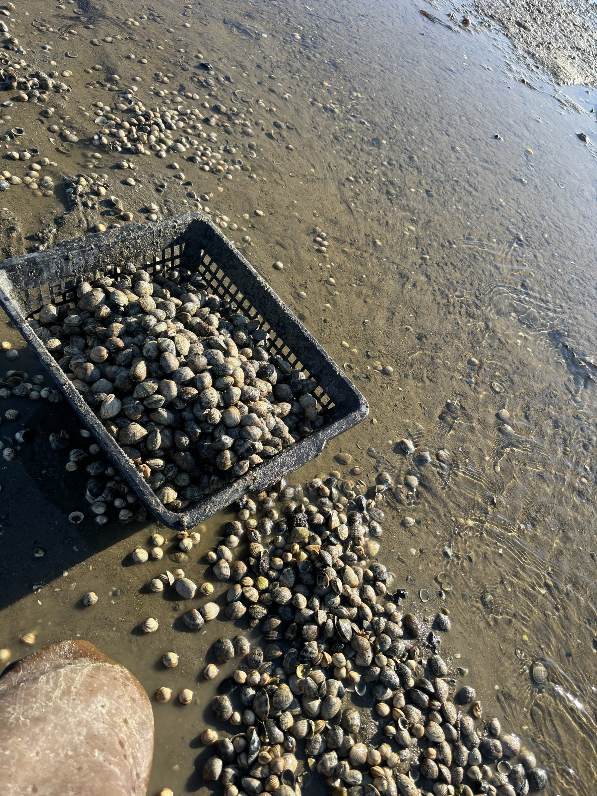
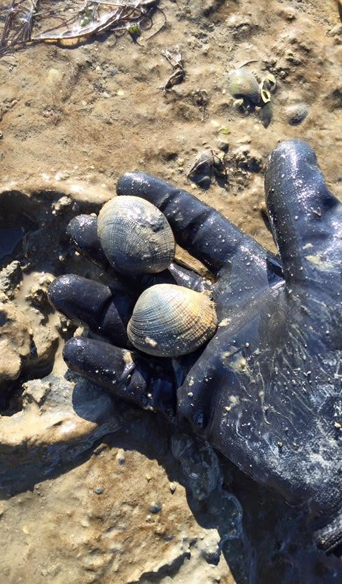

Chaque Jeudi
Chaque Jeudi
Crac'h
7h – 13h • Place de l'Église

Huîtres & Coquillages Le Guennec
La qualité plutôt que la quantité, depuis quatre générations — un lien direct avec nos clients, sur les marchés.

Notre savoir-faire
Nos huîtres creuses sont élevées en pleine mer, sur deux sites ostréicoles de Bretagne Sud, puis triées et affinées dans notre chantier de Crac'h.
Site d'élevage à Saint-Philibert, exposé aux courants du large.

Second site d'élevage à Arradon, aux eaux abritées et riches.

64 Hameau de Kersolard — tri, stockage et préparation des commandes.
Vente au chantier
Nos outils de travail
Nos produits
Tous nos produits sont vendus exclusivement sur les marchés — de la vente directe du producteur au consommateur, sans intermédiaire.

Autres produits disponibles sur commande, selon les marées, les arrivages et vos demandes particulières. Pour toute question sur la disponibilité du jour, contactez-nous directement.

 Or 2019
Or 2019



Calibres
Du N°5, la plus fine, au N°0, la plus généreuse — un calibre pour chaque envie.
Vente directe
Présents toute l'année, tous nos marchés se tiennent le matin de 7h à 13h. Retrouvez-nous en direct, sans intermédiaire.
Chaque Jeudi
7h – 13h • Place de l'Église
 Chaque Vendredi
Chaque Vendredi
7h – 13h • Place du Tribunal
 Chaque Samedi
Chaque Samedi
7h – 13h • Place des Lices
 Chaque Dimanche
Chaque Dimanche
7h – 13h • Place de l'Église
Commandes spéciales
Nous préparons des commandes adaptées à toutes vos occasions.
Pour toute demande, le plus simple reste de nous appeler directement. Livraison possible sur demande, selon disponibilité et trajet.
Appeler pour organiser ma commandeQuestions fréquentes
Tout ce qu'il faut savoir avant de venir nous voir sur les marchés ou au chantier.
Vous pouvez nous retrouver sur les marchés de Crac'h (jeudi), Ploërmel (vendredi), Rennes – Place des Lices (samedi), Pluneret et Saint-Avé (dimanche), de 7h à 13h. Notre chantier à Crac'h est aussi ouvert du lundi au jeudi, de 8h30 à 18h.
Nous élevons des huîtres creuses fines ainsi que des huîtres creuses spéciales, élevées en casier australien. Ces dernières ont d'ailleurs remporté la Médaille d'Or au Salon de l'Agriculture 2019 !
Oui, tout à fait ! Nous préparons vos commandes sur demande pour tous vos événements, fêtes de famille et réceptions. N'hésitez pas à nous contacter à l'avance pour planifier vos plateaux.
Vous pouvez nous joindre par téléphone au 06 61 73 74 23 ou au 07 82 45 73 53. Nous sommes également réactifs sur nos pages Facebook et Instagram.
Nos huîtres sont élevées avec passion dans le Morbihan, en Baie de Quiberon ainsi que dans le Golfe du Morbihan grâce à notre parc situé à Arradon. Forts de 4 générations de savoir-faire à Crac'h, nous privilégions la qualité en vente directe.
Absolument ! Nos huîtres creuses spéciales, élevées selon la méthode en casier australien, ont été récompensées par la Médaille d'Or au Salon de l'Agriculture en 2019.
Notre site situé au 64 Hameau de Kersolard à Crac'h est ouvert du lundi au jeudi, de 8h30 à 18h. Du vendredi au dimanche matin, retrouvez-nous sur nos marchés locaux.
Nous privilégions la vente directe sur les marchés et à notre chantier de Crac'h. Pour toute commande spéciale ou événement dans le secteur, contactez-nous au 06 61 73 74 23 ou au 07 82 45 73 53.
Toute l'équipe Huîtres et Coquillages Le Guennec vous remercie de votre confiance et de votre fidélité ! Que ce soit sur les marchés ou au chantier, nous sommes toujours heureux de partager avec vous la passion de notre métier et le goût authentique de nos parcs de Quiberon et d'Arradon. À très bientôt, autour d'une douzaine d'huîtres !
Contact
Sur les marchés, ou directement à notre chantier de Crac'h.
64 Hameau de Kersolard, 56950 Crac'h
Bretagne Sud, France
Huîtres & Coquillages Le Guennec — Facebook & Instagram